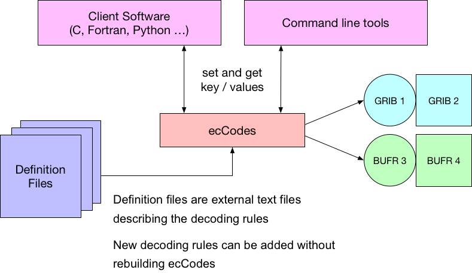

10 metre U wind component
indicatorOfParameter = 33 [u-compoment of wind (m/s)]
table2Version = 3
indicatorOfTypeOfLevel = 105 [Specified height level above ground (m)]
level = 10
10 metre U wind component
discipline = 0 [Meteorological products]
parameterCategory = 2 [Monmentum]
parameterNumber = 2 [u-component of wind (m s-1)]
typeOfFirstFixedSurface = 103 [Specified height level above ground (m)]
scaleFactorOfFirstFixedSurface = 0
scaledValueOfFirstFixedSurface = 10
10 metre U wind component
indicatorOfParameter =165 [10 metere u-compoment of wind (m/s)]
table2Version = 128
有多种编码变量的方法。
ecCodes 使用一个虚拟的 key（计算key）来解耦用户层和编码层。
用户代码获取/设置一个虚拟 key，ecCodes 获取/设置实际编码的 key。
本地配置用于处理本地编码。
ecCodes 提供一些版本无关的 key 用于定义变量：
paramIdshortNamenameunitscentreGRIB 1 使用如下 key：
centretable2VersionindicatorOfParameterlevelTypelevelGRIB 2 使用如下 key：
disciplineparameterCategoryparameterNumbertypeOfFirstFixedSurfacescaleFactorOfFirstFixedSurfacescaledValueOfFirstFixedSurfacetypeOfSecondFixedSurfacescaleFactorOfSecondFixedSurfacescaledValueOfSecondFixedSurface之前的章节中介绍过 ecCodes 的架构：

下面介绍几个与变量有关的重要概念。
GRIB 2：
'2t' = {
discipline=0;
parameterCategory=0;
parameterNumber=0;
typeOfFirstFixedSurface=103;
scaleFactorOfFirstFixedSurface=0;
scaledValueOfFirstFixedSurface=2;
}
GRIB 1：
'2t' = {
indicatorOfParameter=11;
table2Version=3;
levelType=105;
level=2;
}
GRIB 1 ECMWF 本地编码：
'2t' = {
indicatorOfParameter=167;
table2Version=128;
}
GRIB 2：
167 = {
discipline=0;
parameterCategory=0;
parameterNumber=0;
typeOfFirstFixedSurface=103;
scaleFactorOfFirstFixedSurface=0;
scaledValueOfFirstFixedSurface=2;
}
GRIB 1：
167 = {
indicatorOfParameter=11;
table2Version=3;
levelType=105;
level=2;
}
GRIB 1 ECMWF 本地编码：
167 = {
indicatorOfParameter=167;
table2Version=128;
}
访问如下网址，查询参数数据库：
http://apps.ecmwf.int/codes/grib/param-db/
创建两个文件
#include <iostream>
#include <eccodes.h>
using namespace std;
int main(int argc, char** argv)
{
if(argc < 3)
{
cout<<"Usage: "<<argv[0]<<" grib1_path grib2_path";
return 1;
}
const char* grib1_path = argv[1];
const char* grib2_path = argv[2];
const char* sample_filename = "regular_ll_pl_grib2";
int err = 0;
codes_handle *h = codes_grib_handle_new_from_samples(nullptr, sample_filename);
if(h == nullptr)
{
cout<<"ERROR: unable to create handle from sample "<<sample_filename<<endl;
return 1;
}
size_t short_name_size;
codes_get_size(h, "shortName", &short_name_size);
codes_set_string(h, "shortName", "10u", &short_name_size);
size_t value_size;
codes_get_size(h, "values", &value_size);
auto values = new double[value_size];
double v = 0;
for(auto i=0; i<value_size; i++)
{
values[i] = v;
v++;
}
// codes_set_long(h, "bitsPerValue", 16);
codes_set_double_array(h, "values", values, value_size);
codes_write_message(h, grib2_path, "wb");
codes_set_long(h, "edition", 1);
codes_write_message(h, grib1_path, "wb");
delete [] values;
codes_handle_delete(h);
return 0;
}
使用 grib_ls -n parameter p.grib1 p.grib2 查看有何不同。
$ grib_ls -n parameter p.grib1 p.grib2
p.grib1
centre paramId units name shortName
ecmf 130 K Temperature t
1 of 1 messages in p.grib1
p.grib2
ecmf 130 K Temperature t
1 of 1 messages in p.grib2
2 of 2 total messages in 2 files
使用 grib_dump -o 比较两个文件不同。
查看 GRIB 1 文件 p.grib1：
$ grib_dump -O p.grib1
***** FILE: p.grib1
#============== MESSAGE 1 ( length=1596 ) ==============
1-4 identifier = GRIB
5-7 totalLength = 1596
8 editionNumber = 1
====================== SECTION_1 ( length=52, padding=0 ) ======================
1-3 section1Length = 52
4 table2Version = 128
5 centre = 98 [European Centre for Medium-Range Weather Forecasts (common/c-1.table) ]
6 generatingProcessIdentifier = 128
7 gridDefinition = 255
8 section1Flags = 128 [10000000]
9 indicatorOfParameter = 165 [10 metre U wind component (m s**-1) (grib1/2.98.128.table) ]
10 indicatorOfTypeOfLevel = 105 [Fixed height above ground height in meters (2 octets) (grib1/local/ecmf/3.table , grib1/3.table) ]
11-12 level = 10
13 yearOfCentury = 7
14 month = 3
15 day = 23
16 hour = 12
17 minute = 0
18 unitOfTimeRange = 1 [Hour (grib1/4.table) ]
19 P1 = 0
20 P2 = 0
21 timeRangeIndicator = 0 [Forecast product valid at reference time + P1 (P1>0) (grib1/local/ecmf/5.table , grib1/5.table) ]
22-23 numberIncludedInAverage = 0
24 numberMissingFromAveragesOrAccumulations = 0
25 centuryOfReferenceTimeOfData = 21
26 subCentre = 0 [Unknown code table entry (grib1/0.ecmf.table) ]
27-28 decimalScaleFactor = 0
29-40 reservedNeedNotBePresent = 12 {
00, 00, 00, 00, 00, 00, 00, 00, 00, 00, 00, 00
} # pad reservedNeedNotBePresent
41 localDefinitionNumber = 1 [MARS labelling or ensemble forecast data (grib1/localDefinitionNumber.98.table) ]
42 marsClass = 1 [Operational archive (mars/class.table) ]
43 marsType = 2 [Analysis (mars/type.table) ]
44-45 marsStream = 1025 [Atmospheric model (mars/stream.table) ]
46-49 experimentVersionNumber = 0001
50 perturbationNumber = 0
51 numberOfForecastsInEnsemble = 0
52 padding_local1_1 = 1 {
00
} # pad padding_local1_1
====================== SECTION_2 ( length=32, padding=0 ) ======================
1-3 section2Length = 32
4 numberOfVerticalCoordinateValues = 0
5 pvlLocation = 255
6 dataRepresentationType = 0 [Latitude/Longitude Grid (grib1/6.table) ]
7-8 Ni = 16
9-10 Nj = 31
11-13 latitudeOfFirstGridPoint = 60000
14-16 longitudeOfFirstGridPoint = 0
17 resolutionAndComponentFlags = 128 [10000000]
18-20 latitudeOfLastGridPoint = 0
21-23 longitudeOfLastGridPoint = 30000
24-25 iDirectionIncrement = 2000
26-27 jDirectionIncrement = 2000
28 scanningMode = 0 [00000000]
29-32 zero =
====================== SECTION_4 ( length=1500, padding=0 ) ======================
1-3 section4Length = 1500
4 dataFlag = 8 [00001000]
5-6 binaryScaleFactor = -15
7-10 referenceValue = 0
11 bitsPerValue = 24
12-1500 values = (496,1489) {
...
} # data_g1simple_packing values
====================== SECTION_5 ( length=4, padding=0 ) ======================
1-4 7777 = 7777
查看 GRIB 2 文件 p.grib2：
$ grib_dump -O p.grib2
***** FILE: p.grib2
#============== MESSAGE 1 ( length=1667 ) ==============
1-4 identifier = GRIB
5-6 reserved = MISSING
7 discipline = 0 [Meteorological products (grib2/tables/4/0.0.table) ]
8 editionNumber = 2
9-16 totalLength = 1667
====================== SECTION_1 ( length=21, padding=0 ) ======================
1-4 section1Length = 21
5 numberOfSection = 1
6-7 centre = 98 [European Centre for Medium-Range Weather Forecasts (common/c-11.table) ]
8-9 subCentre = 0
10 tablesVersion = 4 [Version implemented on 7 November 2007 (grib2/tables/1.0.table) ]
11 localTablesVersion = 0 [Local tables not used (grib2/tables/4/1.1.table) ]
12 significanceOfReferenceTime = 1 [Start of forecast (grib2/tables/4/1.2.table) ]
13-14 year = 2007
15 month = 3
16 day = 23
17 hour = 12
18 minute = 0
19 second = 0
20 productionStatusOfProcessedData = 0 [Operational products (grib2/tables/4/1.3.table) ]
21 typeOfProcessedData = 2 [Analysis and forecast products (grib2/tables/4/1.4.table) ]
====================== SECTION_3 ( length=72, padding=0 ) ======================
1-4 section3Length = 72
5 numberOfSection = 3
6 sourceOfGridDefinition = 0 [Specified in Code table 3.1 (grib2/tables/4/3.0.table) ]
7-10 numberOfDataPoints = 496
11 numberOfOctectsForNumberOfPoints = 0
12 interpretationOfNumberOfPoints = 0 [There is no appended list (grib2/tables/4/3.11.table) ]
13-14 gridDefinitionTemplateNumber = 0 [Latitude/longitude (Also called equidistant cylindrical, or Plate Carree) (grib2/tables/4/3.1.table) ]
15 shapeOfTheEarth = 6 [Earth assumed spherical with radius of 6,371,229.0 m (grib2/tables/4/3.2.table) ]
16 scaleFactorOfRadiusOfSphericalEarth = MISSING
17-20 scaledValueOfRadiusOfSphericalEarth = MISSING
21 scaleFactorOfEarthMajorAxis = MISSING
22-25 scaledValueOfEarthMajorAxis = MISSING
26 scaleFactorOfEarthMinorAxis = MISSING
27-30 scaledValueOfEarthMinorAxis = MISSING
31-34 Ni = 16
35-38 Nj = 31
39-42 basicAngleOfTheInitialProductionDomain = 0
43-46 subdivisionsOfBasicAngle = MISSING
47-50 latitudeOfFirstGridPoint = 60000000
51-54 longitudeOfFirstGridPoint = 0
55 resolutionAndComponentFlags = 48 [00110000]
56-59 latitudeOfLastGridPoint = 0
60-63 longitudeOfLastGridPoint = 30000000
64-67 iDirectionIncrement = 2000000
68-71 jDirectionIncrement = 2000000
72 scanningMode = 0 [00000000]
====================== SECTION_4 ( length=34, padding=0 ) ======================
1-4 section4Length = 34
5 numberOfSection = 4
6-7 NV = 0
8-9 productDefinitionTemplateNumber = 0 [Analysis or forecast at a horizontal level or in a horizontal layer at a point in time (grib2/tables/4/4.0.table) ]
10 parameterCategory = 2 [Momentum (grib2/tables/4/4.1.0.table) ]
11 parameterNumber = 2 [u-component of wind (m s-1) (grib2/tables/4/4.2.0.2.table) ]
12 typeOfGeneratingProcess = 0 [Analysis (grib2/tables/4/4.3.table) ]
13 backgroundProcess = 255
14 generatingProcessIdentifier = 128
15-16 hoursAfterDataCutoff = 0
17 minutesAfterDataCutoff = 0
18 indicatorOfUnitOfTimeRange = 1 [Hour (grib2/tables/4/4.4.table) ]
19-22 forecastTime = 0
23 typeOfFirstFixedSurface = 103 [Specified height level above ground (m) (grib2/tables/4/4.5.table) ]
24 scaleFactorOfFirstFixedSurface = 0
25-28 scaledValueOfFirstFixedSurface = 10
29 typeOfSecondFixedSurface = 255 [Missing (grib2/tables/4/4.5.table) ]
30 scaleFactorOfSecondFixedSurface = MISSING
31-34 scaledValueOfSecondFixedSurface = MISSING
====================== SECTION_5 ( length=21, padding=0 ) ======================
1-4 section5Length = 21
5 numberOfSection = 5
6-9 numberOfValues = 496
10-11 dataRepresentationTemplateNumber = 0 [Grid point data - simple packing (grib2/tables/4/5.0.table) ]
12-15 referenceValue = 0
16-17 binaryScaleFactor = -15
18-19 decimalScaleFactor = 0
20 bitsPerValue = 24
21 typeOfOriginalFieldValues = 0 [Floating point (grib2/tables/4/5.1.table) ]
====================== SECTION_6 ( length=6, padding=0 ) ======================
1-4 section6Length = 6
5 numberOfSection = 6
6 bitMapIndicator = 255 [A bit map does not apply to this product (grib2/tables/4/6.0.table) ]
====================== SECTION_7 ( length=1493, padding=0 ) ======================
1-4 section7Length = 1493
5 numberOfSection = 7
6-1493 codedValues = (496,1488) {
...
} # data_g2simple_packing codedValues
====================== SECTION_8 ( length=4, padding=0 ) ======================
1-4 7777 = 7777